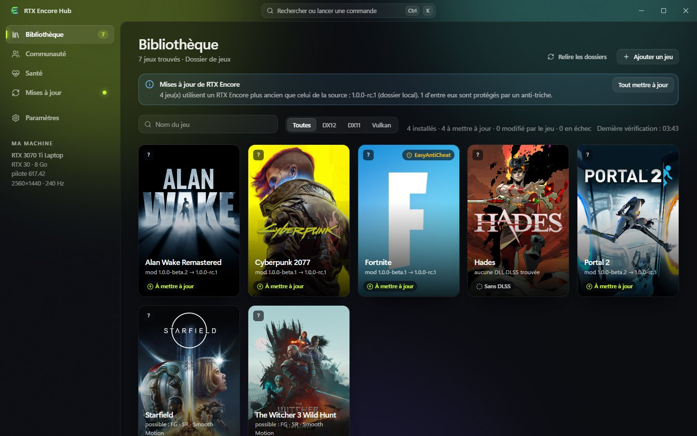
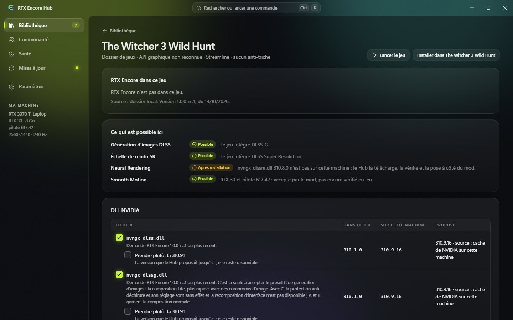
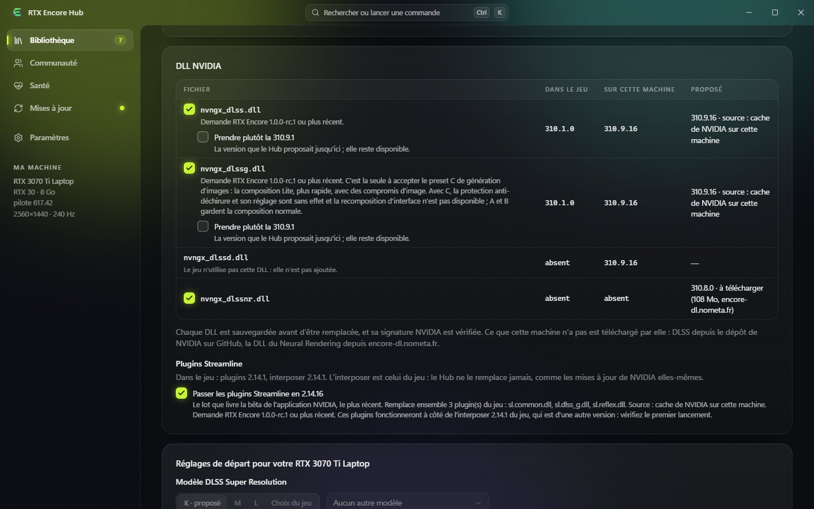

Votre bibliothèque. Vos installations. Votre retour en arrière.
Le compagnon Windows de RTX Encore. Il trouve vos jeux, installe le mod avec les fichiers NVIDIA qu'il lui faut, tient le tout à jour, et peut toujours remettre un jeu comme il était.
Windows 10 et 11, x64 · français, anglais et chinois simplifié · s'installe sans droits d'administrateur

Capture de l'application réelle, sur une bibliothèque de démonstration faite de dossiers de jeux factices.
Pourquoi passer par le Hub plutôt que copier les fichiers à la main
Installer un mod dans plusieurs jeux, c'est trouver des dossiers, vérifier des versions de DLL, tenir des sauvegardes et se rappeler ce qui est à mettre à jour. Le Hub le fait pour vous, et montre ce qu'il va faire avant de le faire.
nvngx_dlssnr.dll 310.8.0, le build exact que le mod exige, est téléchargée, vérifiée et posée à côté du mod.Ce qu'il fait
Une bibliothèque de jeux
Les jeux de Steam, Epic et GOG, les dossiers que vous ajoutez, ou un seul jeu par son exécutable. Chaque tuile dit où en est le jeu : non installé, installé, à mettre à jour, modifié par le jeu, en échec.
Une fiche par jeu
Ce que RTX Encore peut y faire sur votre carte et votre pilote, génération d'images, échelle de rendu DLSS, Smooth Motion, Neural Rendering, et pourquoi.
Les bons fichiers NVIDIA
Les versions de DLSS et de Streamline les plus récentes que le RTX Encore du jeu admet, depuis ce que votre machine a déjà ou par téléchargement. Une DLL n'est acceptée qu'avec une signature NVIDIA valide.
Choisi une fois pour tous les jeux
Choisissez les versions de DLSS et de Streamline et vos presets DLSS une fois dans les paramètres. Ce que vous décochez dans un jeu y reste laissé de côté.
Installer avec un retour arrière
Le plan est montré avant d'écrire quoi que ce soit, écrit en entier ou pas du tout, et une installation interrompue est annulée. Les droits d'administrateur seulement là où un dossier l'exige.
Mises à jour
Les publications de RTX Encore avec leurs notes, un jeu ou tous. Le Hub cherche sa propre nouvelle version ; les mises à jour sont signées.
Réglages
Un formulaire pour rtx-encore.jsonc, des jeux de réglages nommés par jeu, des réglages de départ pour votre carte, et le modèle DLSS Super Resolution dans le profil de pilote.
Santé et sauvegardes
Lancer le jeu, observer sa première minute, et lister chaque état auquel le jeu peut revenir.
Regarder avant d'installer
Ce que le Hub dit d'un jeu est déduit de ses fichiers, de votre carte et de votre pilote. Ce n'est pas la garantie qu'une fonction marche dans ce jeu, et aucune performance n'est mesurée.


Bien démarrer
- Téléchargez
RTX-Encore-Hub-Setup-<version>.exedepuis les publications et lancez-le. Il s'installe pour votre compte seulement. Ou prenezRTX-Encore-Hub-Portable-<version>.zip, qui n'installe rien : décompressez-la et lancezrtx-encore-hub.exe. - Ouvrez Bibliothèque. Les jeux Steam, Epic et GOG y sont ; ajoutez d'autres dossiers dans Paramètres.
- Ouvrez la fiche d'un jeu, lisez ce qui y est possible, puis Installer. Le plan liste chaque fichier avant que rien ne soit écrit.
- Dans Santé, Lancer et vérifier démarre le jeu et vous dit comment s'est passée sa première minute.
- Quand un nouveau RTX Encore sort, Tout mettre à jour dans la bibliothèque met à jour tous les jeux.